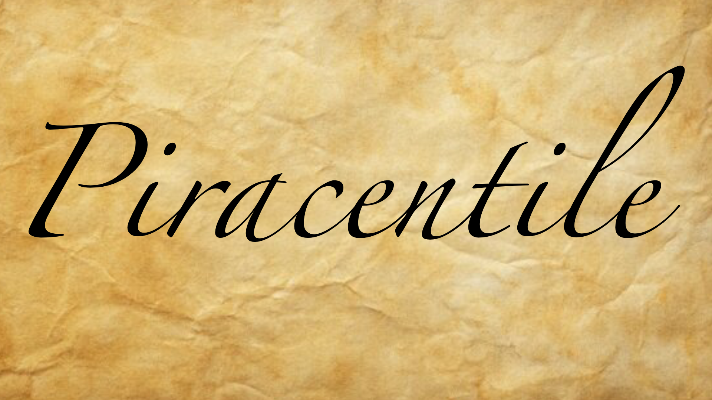

QUYNH LUONG
( HE/HIM )
Instagram: @ep1phyll0m.art
About the Artist
Quynh Luong is a second generation Vietnamese-American immigrant from Stockton, California. He is currently pursuing a BFA in Digital Media Art at San Jose State University, and intends on focusing on telling stories through digital illustration, 3D modeling, and video. Growing up, he found comfort in animated media, and through many of them he's developed his sense of self and an understanding of the factors that shape people. With this in mind, Luong is also minoring in Political Science, a subject which informs the way he considers the world and his general practice. His works in content often range from his own cultural experiences growing up to the power structures that society lives under. Luong hopes to create a space for viewers to broach topics affecting their own lives through the stories that are told through his characters and their backgrounds that may parallel circumstances in viewers' own lives. Just as analyzing fictional characters and their motivations in various media have developed his own critical thinking skills, he hopes that his own stories garner investment and can contribute to more people seeking to understand and empathize with the sectors of life that may not always be focused on in the popular culture.
Piracentile
Through my work, I intend on attempting to portray a sincerity that I have trouble with showing in-person. I want to depict the duality of human nature where just as we are capable of extreme depravity, we can also be a source for hope and support in the world. I intend on expressing these ideas through the characters I create and the circumstances they live in to show how and why people choose to live the way that they do. The settings that these characters may live in may be bizarre and impossible in reality, though their needs and desires still remain grounded.
